3-9-域名管理系统之DNS
基础知识
我相信有部分同学肯定碰到过这样的情况，那就是QQ明明上的去，而网页打不开，通常这个情况你去搜索解决方法，大家就会告诉你改DNS。
还有一些人办理宽带的时候，有些人会提到这个宽带有DNS劫持的情况，不要用这家的宽带，包括买路由器的时候也有人会提到DNS劫持，这里的DNS劫持你知道是什么意思吗？今天这个文章我们就来详细解读一下什么是DNS，DNS劫持是什么。
那么今天我们就来学习DNS，这里我们还得回顾下什么是IP。
IP地址
在网络不发达的时候，电脑数据是独立不共享的，两台机器传输数据可以通过数据线传输。
如果是三台，或者更多的机器，要怎么插网线？
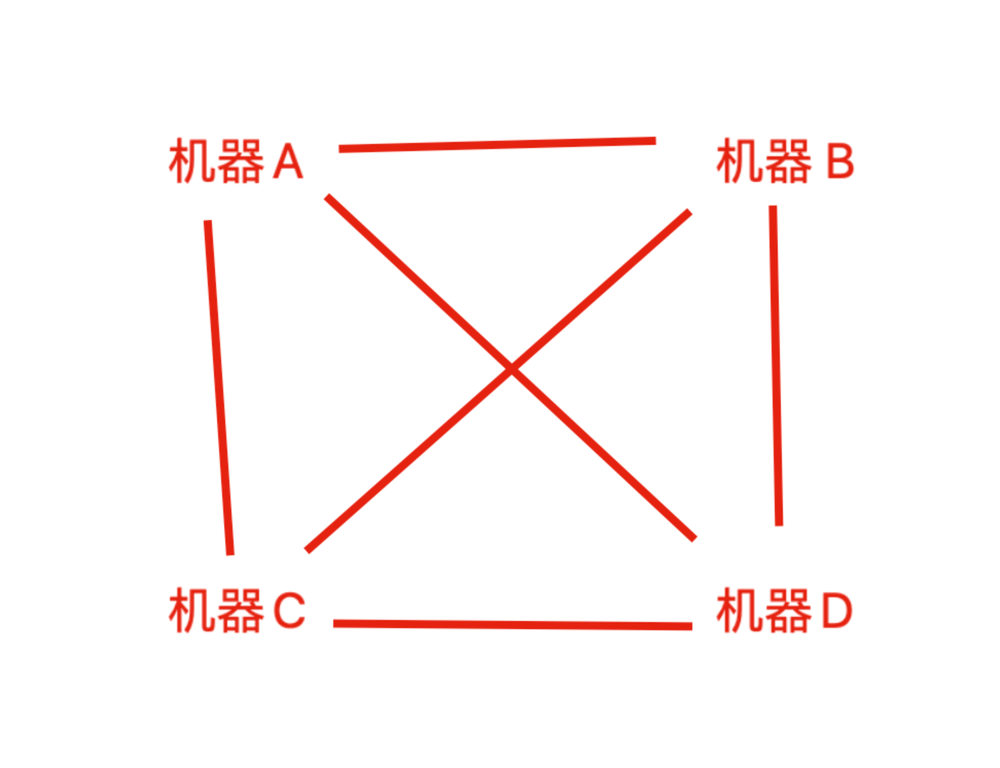
那现在满世界的N台电脑，怎么进行数据交互呢，你怎么看到淘宝网的商品呢。
所有的机器都能够接入互联网，通过互联网互相转发数据。
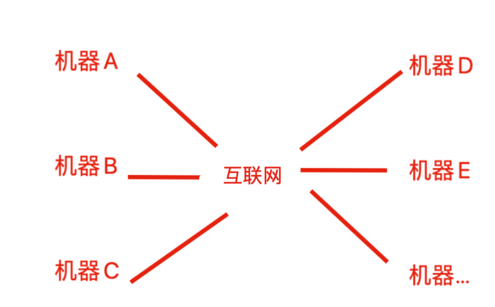
那这里就要明确，每台机器的地址，否则数据发给别人可咋办，为了准确发送数据，就要给每台电脑添加门牌号与地址信息。
因此IP地址，就是用于标记机器在网络中的地址信息，保证数据不会发错给别的人。
比如向192.168.1.100机器发数据，肯定不会发送到192.168.1.105上
公网ip与局域网ip
IP地址好比寄快递，需要明确省、市、县、小区、门牌号等。
局域网
局域网的ip好比是某一个小区的门牌号，用于某一个群体内部交互数据使用的ip地址，离开这个群体，也就失效了。
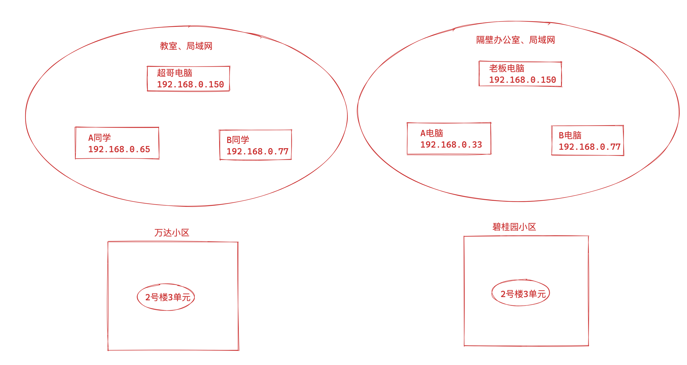
公网
- 公网ip，例如，123.206.16.61、123.206.16.62
- 局域网ip，例如192.168.10.11，例如192.168.5.44
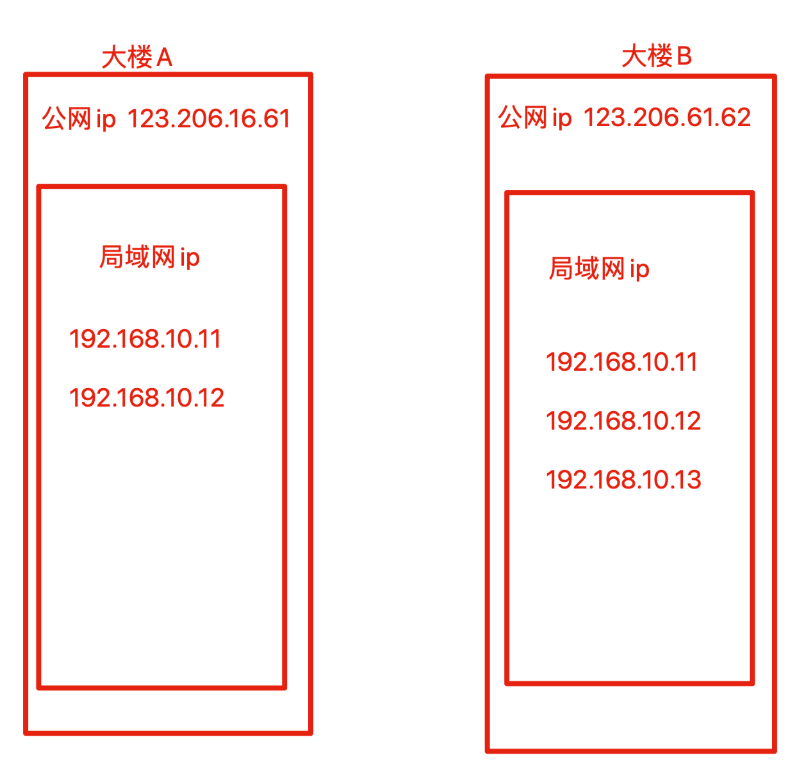
- 如果大楼A公司内部员工要发送数据资料，192.168.10.12只需发给192.168.10.11即可
- 如果大楼A公司某一个机器，要给大楼B公司的一个机器发数据，就得
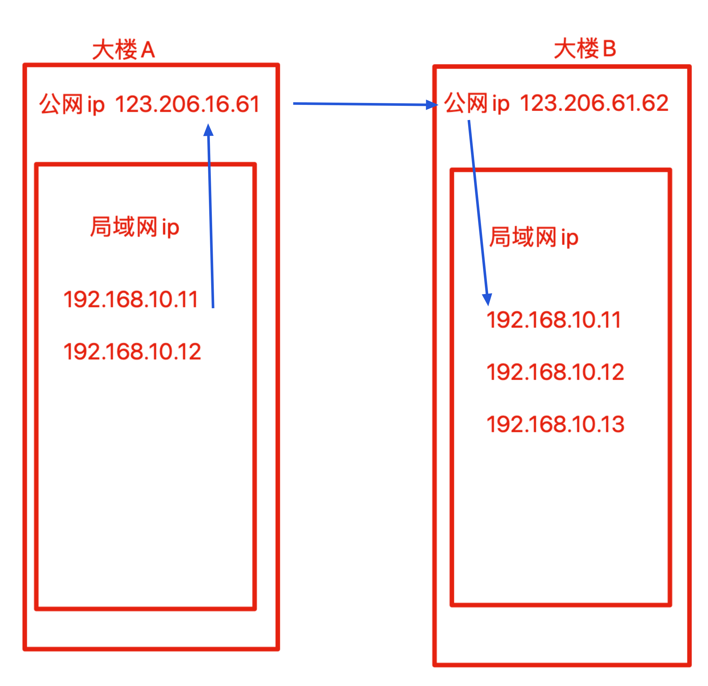
什么是DNS
网页浏览的原理
大家日常上网的时候，打开的网页本质上就是你从对方服务器上获取的文件，比如说你现在正在看的这篇文章，就存储在在一台服务器上，你通过浏览器，获取到了这些数据，再把他们显示到屏幕上。
浏览网页的本质，就是下载文件，并将下载下来的网页文件变成你所能看到的图像。网页文件一般是.html结尾的，不相信的话你可以用电脑浏览器，随便打开一个网址，右键空白处，网页另存为，然后你就会发现你存储下来了一个.html结尾的网页文件，这时候你就算断网，双击这个网页文件你依旧可以用浏览器浏览，因为这个html文件被你保存到电脑上了。
所以浏览网页的原理就是，在互联网上找到了对方的电脑，然后从对方的电脑里拷贝出来html网页文件到你的电脑上，并将其转化成了文字和图片显示到显示器或手机上。
问题是，我们是怎么访问的这些网站？
- 直接访问该机器的IP地址？
- 访问
域名
域名与IP的关系
既然你要浏览网页需要在整个互联网上找到对方的电脑，那你就需要输入对方的IP才可以访问
比如大家可以在浏览器里输入这个IP地址123.206.16.61你们可以看看打开的是不是超哥的网站。
是不是很有意思，你靠着IP地址可以访问网站。
你也可以输入https://yuchaoit.cn/也可以访问到超哥的网站，这是什么原理呢？
域名诞生了
在早期的时候，上网就是这么麻烦，你想要访问对方的网站，你必须要知道对方的IP，然后在你的浏览器里输入IP地址，然后就可以访问了，但是IP地址是4组数字，记IP地址的难度不亚于背一个陌生人的手机号，于是乎，我们用一串英文字母来代替IP地址，这就是网站域名。
域名，说白了就是网站名，专业的说法是电脑记录的IP地址，被翻译成了另外一种人类方便记录的语言。
对于网民来说，域名就是访问网站的一个地址。但对于企业来说，这就是门面，其地位等同于商标。
尤其是线上生意的需求越来越来大的疫情后时代，域名的重要性直接捆绑了网站的重要性。
美图秀秀的董事长蔡文胜就是通过域名投资获得了创业的第一桶金，http://qiyi.com(爱奇艺)、http://tudou.com(土豆)、http://baofeng.com(暴风影音)等域名都是出自他手转卖。
域名的重要性
域名决定了用户搜索的精准性，比如www.taobao.com、www.jd.com是非常容易记忆的，用户也很容易搜索，就获得了更精准的访问率，直接提高企业产品售卖成功几率。这就是为什么京东一开始叫做360buy.com，后来改为了jd.com。
以上都是从企业角度，来体现一个域名的重要性。
从小的来说，域名能够让用户轻松、精准的访问到一台机器。
例如超哥的网站域名就是https://yuchaoit.cn/，对应的ip地址是123.206.16.61，ip很难记，域名可以自定义很好记。
域名怎么和IP对应的
但是这里就有一个问题了，你输入的是域名，你的电脑该怎么将他变成IP地址呢？就比如你输入是https://yuchaoit.cn/，为什么你的电脑知道对方的IP是123.206.16.61呢？
hosts文件
这个东西就是hosts文件，hosts文件就在你的C:\windows\system32\drivers\etc文件夹下，linux就是/etc/hosts。
他相当于电脑的电话本，他记录着每一个域名对应的IP地址，当你输入域名而不是IP的时候，他就会在这个电话本里找到对应的域名，然后把他转化成IP地址。
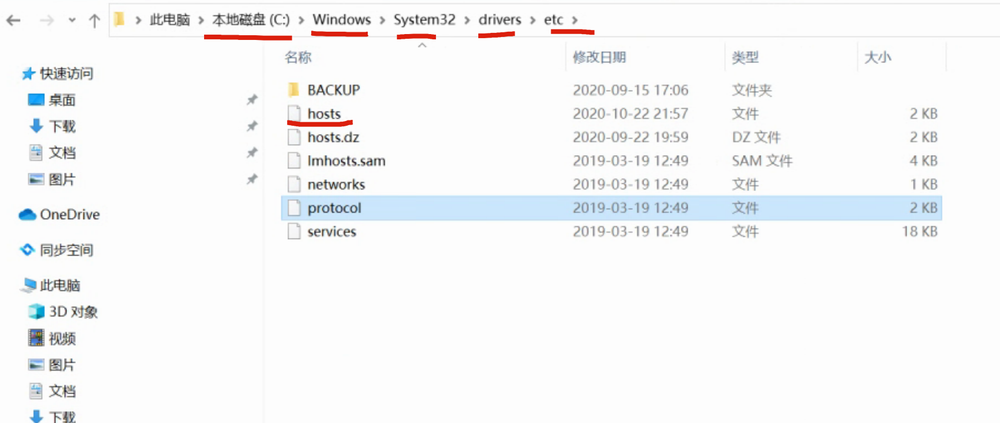
来玩一玩hosts文件
比如chaoge666.cn这个域名是不存在的。
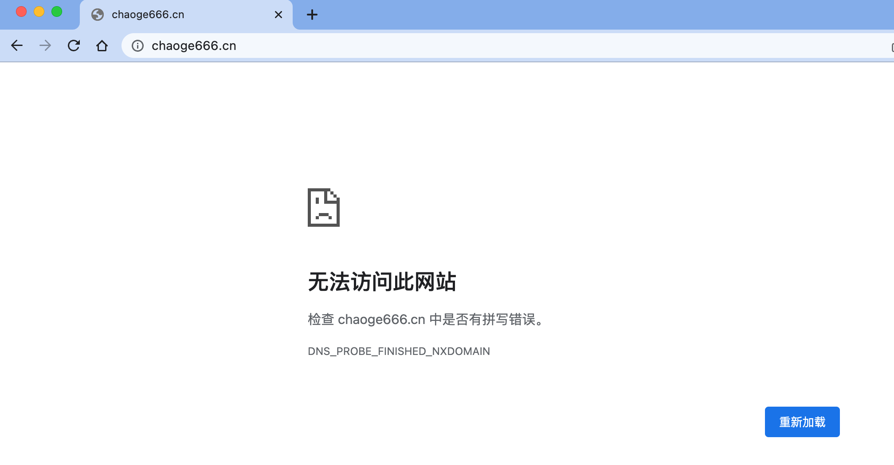
192.168.0.123这是你本地一个linux机器，是可以访问的。
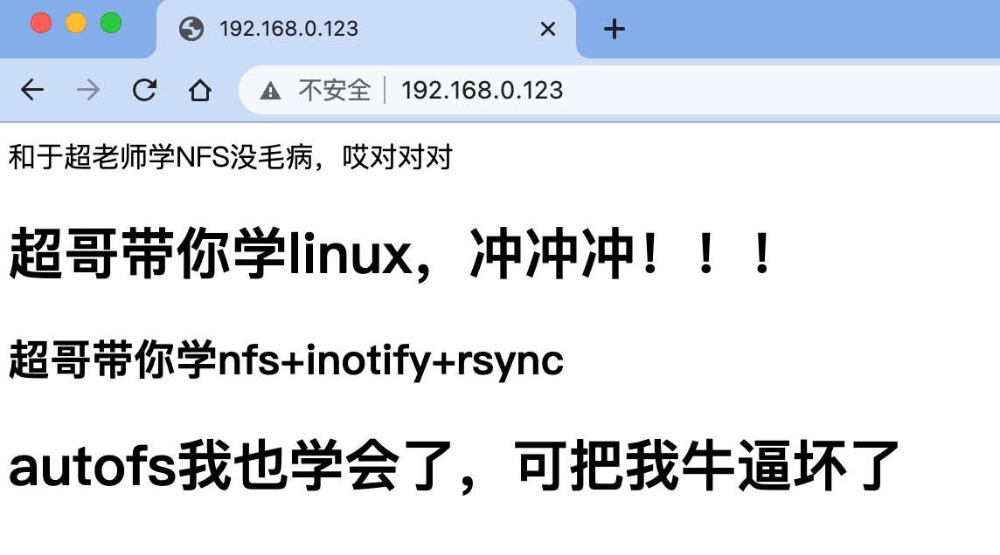
如何将这个域名和这个IP对应起来，做一个解析关系？
修改hosts文件即可，根据你自己的系统平台修改。
192.168.0.123 chaoge666.cn
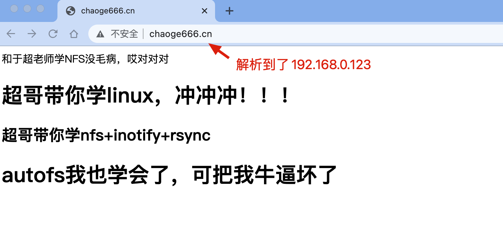
ping检测域名解析。
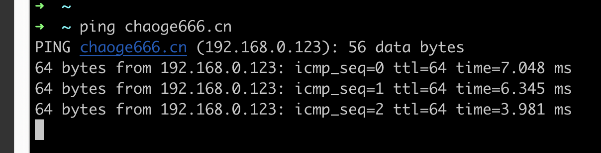
关于域名和IP解析关系。
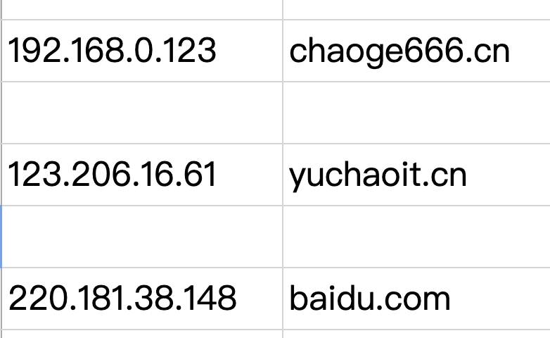
DNS解析服务器
但是这样也有问题，那就是Hosts文件是有限的，就和你不可能拥有这个世界上所有人的电话号码一样。
既然我们自己不可能拥有全世界所有人的电话号码，但是我们可以将收集电话号码这个任务交给一个专门来干这个活的人，然后大家想要问电话的时候去他那查一下就可以了。
这就是DNS服务器，DNS服务器有着相当全的域名和IP，当你输入一串网站的时候，这串网站并不会直接访问，而是先将这个网站发送给DNS服务器，DNS服务器帮你把这串网站变成了IP地址，然后返回给你的电脑，你再访问这个IP地址，这样就解决了IP难记，而域名不能直接访问的问题了。
DNS劫持
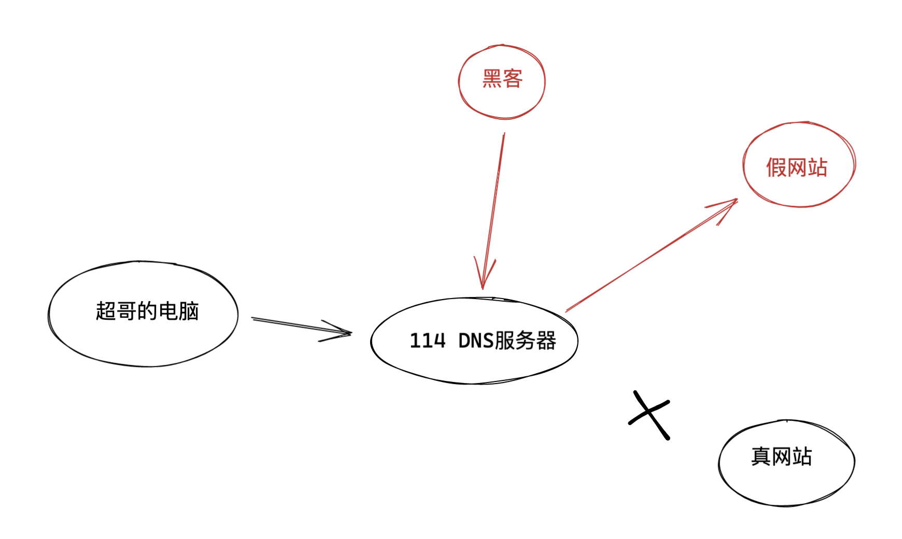
正确的DNS会将域名、正确的解析到正确的IP地址，如www.yuchaoit.cn解析到123.206.16.61。
但是如果DNS有了问题，将你的域名解析到另一个人的IP地址，让你直接打开看到的不是超哥的学习网址，而是一个澳门xx，xx美女，在线发牌，，这。。。。
因此我们得给服务器、或者我们本地的电脑，设置一个解析速度很快的、绿色的、安全的DNS服务器。
公共DNS服务器
腾讯、119.29.29.29、https://www.dnspod.cn/Products/Public.DNS
阿里云、IPv4 DNS 地址：223.5.5.5 / 223.6.6.6、https://alidns.com/
百度、IPv4 DNS 地址：180.76.76.76 、https://dudns.baidu.com/support/localdns/Address/index.html
114、IPv4 DNS 地址：114.114.114.114 / 114.114.115.115、https://www.114dns.com/
私有DNS服务器
我们除了可以使用别人搭建好的DNS服务器，也就是说，你用的IP、域名，都是在互联中注册过的，是交了钱的。
那企业内部，或者我们个人的服务器环境，也需要用到大量的域名怎么办？
不能全部去买吧，自己搭建DNS域名解析服务不就完事了？
DNS域名解析服务
相较于由数字构成的 IP 地址，域名更容易被理解和记忆，所以我们通常更习惯通过域名 的方式来访问网络中的资源。
但是，网络中的计算机之间只能基于 IP 地址来相互识别对方的 身份，而且要想在互联网中传输数据，也必须基于外网的 IP 地址来完成。
为了降低用户访问网络资源的门槛，DNS(Domain Name System，域名系统)技术应运 而生。
这是一项用于管理和解析域名与 IP 地址对应关系的技术，简单来说，就是能够接受用 户输入的域名或 IP 地址，然后自动查找与之匹配(或者说具有映射关系)的 IP 地址或域名， 即将域名解析为 IP 地址(正向解析)，或将 IP 地址解析为域名(反向解析)。
这样一来，我们 只需要在浏览器中输入域名就能打开想要访问的网站了。
DNS 域名解析技术的正向解析也是 我们最常使用的一种工作模式。
鉴于互联网中的域名和 IP 地址对应关系数据库太过庞大，DNS 域名解析服务采用了类似目录树的层次结构来记录域名与 IP 地址之间的对应关系，从而形成了一个分布式的数据库系统。
域名后缀一般分为国际域名和国内域名，国际域名是用户可注册的通用顶级域名的俗称。
它的后缀为.com、.top、.net或.org,. vip。 国内域名为后缀为.cn的域名；二者注册机构不同，在使用中基本没有区别。
原则上来讲，域名后缀都有严格的定义，但在实际使用时可以不必严格遵守。
目前最常见的域名后缀有.com(商业组织)、.org(非营利组 织)、.gov(政府部门)、.net(网络服务商)、.edu(教研机构)、.pub(公共大众)、.cn(中国 国家顶级域名)等。
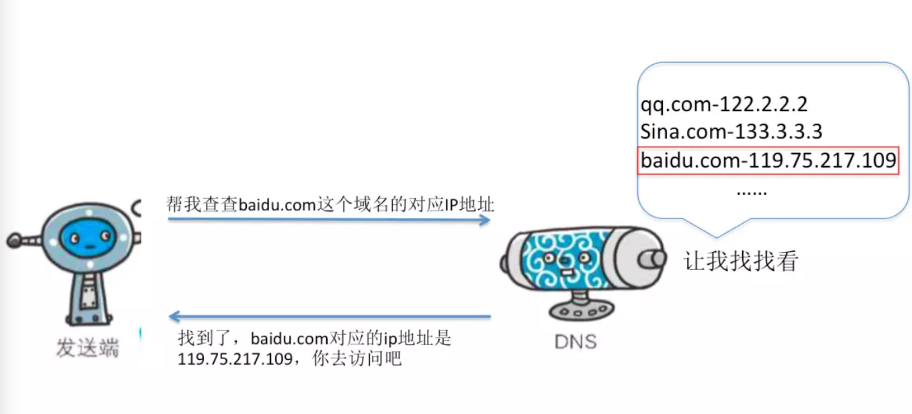
任务背景
公司在开发一个电商网站，该服务器地址是192.168.0.110已经部署好了，现在希望通过域名pdd.yuchaoit.cn来访问该网站，便于更好的访问体验。
运维部门需要解决这个问题，便于开发、测试团队使用，通过内网的DNS服务器，做好域名解析。
可以改hosts吗？为什么不能？
任务需求
需要在内网环境下，开发、测试部门同事可以访问该网站。
192.168.0.110 pdd.yuchaoit.cn
任务拆解
1.修改hosts文件（不合适，此方式只适合自己本机调试）
2.部署DNS服务器（正解）
学习目标
1.DNS服务作用
2.域名构成
3.DNS服务部署
4.域名解析实践
DNS结构
DNS（domain name system ） 域名管理系统
- 域名：
由特定的格式组成，用来表示互联网中==某一台计算机或者计算机组的名称==，能够使人更方便的访问互联网，而不用记住能够被机器直接读取的IP地址。
1、DNS的作用
域名的==正向解析==
将主机域名转换为对应的IP 地址，以便网络程序能够通过主机域名访问到对应的服务器主机
域名——>IP A记录
域名的==反向解析==
将主机的IP地址转换为对应的域名，以便网络（服务）程序能够通过IP地址查询到主机的域名
IP——>域名 PTR记录
2、DNS树形结构
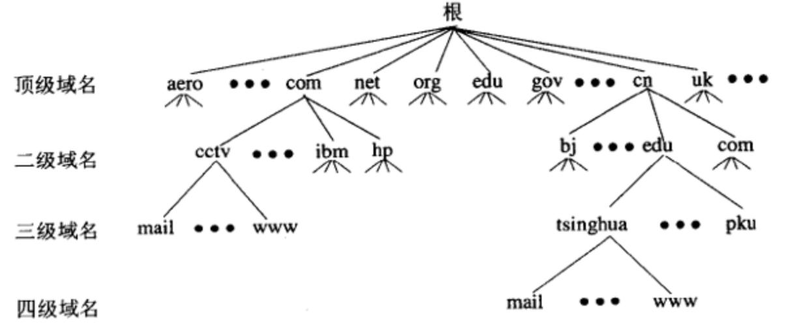
根域 .
- 在整个 DNS 系统的最上方一定是 . (小数点) 这个 DNS 服务器 (称为 root)，也叫”根域“。
- 根域 （13台 全世界只有13台。1个为主根服务器，放置在美国。其余12个均为辅根服务器，其中9个放置在美国，欧洲2个，位于英国和瑞典，亚洲1个，位于日本。）
顶级域名（一级域名）
顶级域名是域名的最后一个部分，即是域名最后一点之后的字母，例如在http://yuchaoit.cn这个域名中，顶级域是.cn（或.COM），大小写视为相同。
二级域名
二级域名是域名的倒数第二个部分，例如在http://yuchaoit.cn这个域名中，二级域名是yuchaoit。以此类推。
3、域名机构
收费、新网https://www.xinnet.com/、万网https://www.hichina.com/
免费域名、tk域名等。
4、DNS工作原理
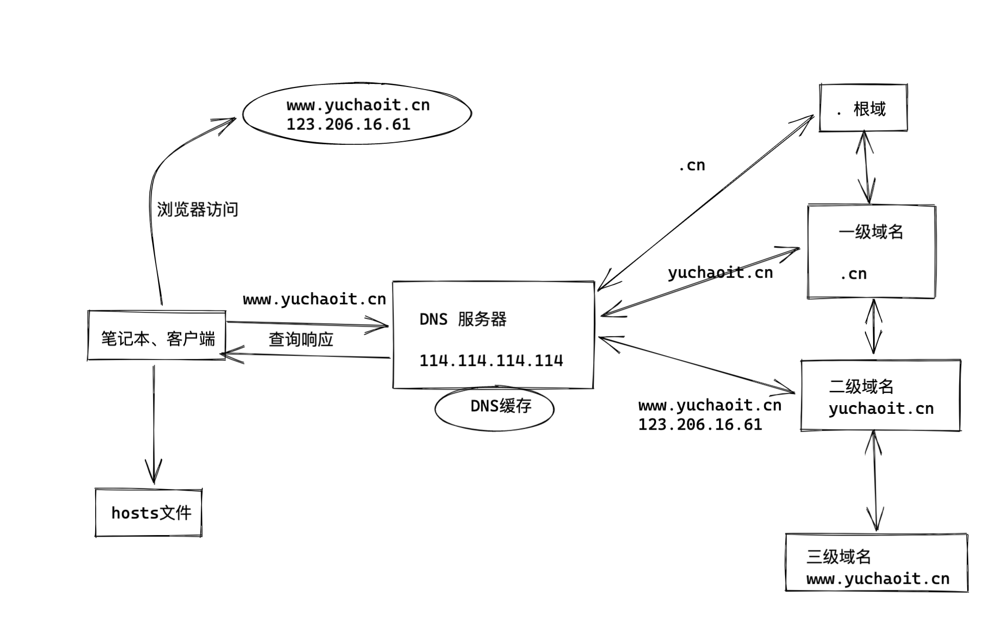
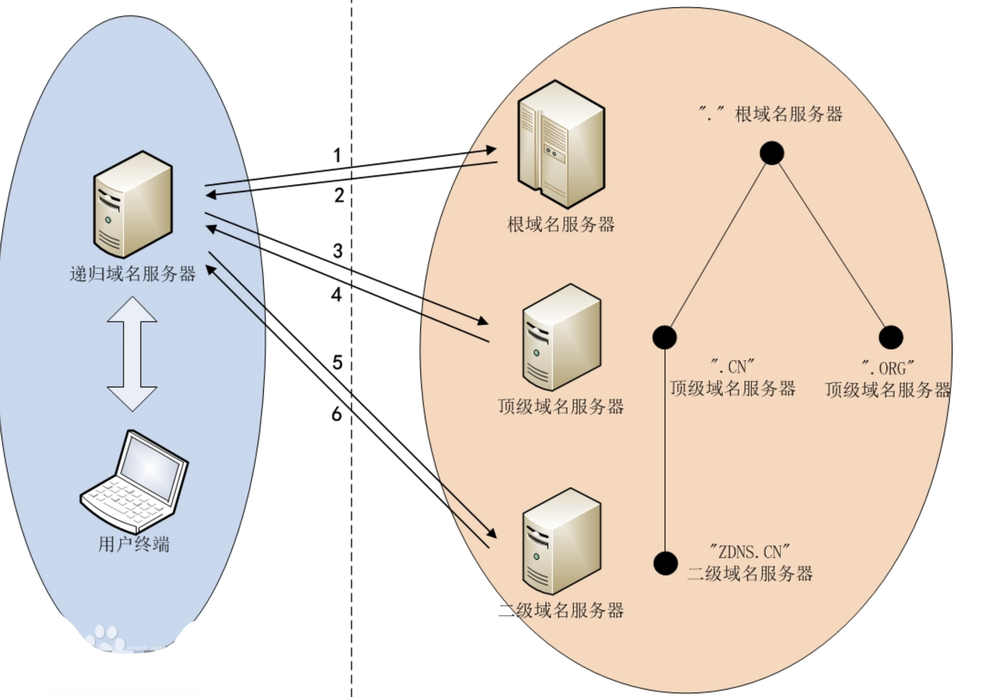
DNS域名解析和手机号查询理解。
1、在浏览器中输入www.baidu.com域名，操作系统会先检查自己本地的hosts文件是否有这个网址映射关系，如果有，就先调用这个IP地址映射，完成域名解析。
2、如果hosts里没有这个域名的映射，则查找本地DNS解析器缓存，是否有这个网址映射关系，如果有，直接返回，完成域名解析。
3、如果hosts与本地DNS解析器缓存都没有相应的网址映射关系，首先会找TCP/ip参数中设置的首选DNS服务器（常见8.8.8.8；114.114.114.114）在此我们叫它本地DNS服务器，此服务器收到查询时，如果要查询的域名，包含在本地配置区域资源中，则返回解析结果给客户机，完成域名解析，此解析具有权威性。
4、如果本地DNS服务器本地区域文件与缓存解析都失效，则根据本地DNS服务器的设置（是否设置转发器）进行查询，如果未用转发模式，本地DNS就把请求发至13台根DNS，根DNS服务器收到请求后会判断这个域名(.com)是谁来授权管理，并会返回一个负责该顶级域名服务器的一个IP。本地DNS服务器收到IP信息后，将会联系负责.com域的这台服务器。这台负责.com域的服务器收到请求后，如果自己无法解析，它就会找一个管理.com域的下一级DNS服务器地址(baidu.com)给本地DNS服务器。当本地DNS服务器收到这个地址后，就会找baidu.com域服务器，重复上面的动作，进行查询，直至找到www.baidu.com主机。
5、如果用的是转发模式，此DNS服务器就会把请求转发至上一级DNS服务器，由上一级服务器进行解析，上一级服务器如果不能解析，或找根DNS或把转请求转至上上级，以此循环。不管是本地DNS服务器用是是转发，还是根提示，最后都是把结果返回给本地DNS服务器，由此DNS服务器再返回给客户机。
DNS部署（重要）
DNS 的==域名解析==都是 ==udp/53== ；主从之间的==数据传输==默认使用==tcp/53==；
DNS软件：
==Bind==是一款开放源码的DNS服务器软件，Bind由美国加州大学Berkeley（伯克利）分校开发和维护的，全名为Berkeley Internet Name Domain它是目前世界上使用最为广泛的DNS服务器软件，支持各种unix平台和windows平台。
BIND现在由互联网系统协会（Internet Systems Consortium）负责开发与维护。
bind搭建
目标，在客户端配置了我们部署的DNS服务器之后，可以解析www.yuchao666.cn。
服务器准备
| IP | hostname | 作用 |
|---|---|---|
| 192.168.0.104 | dns-server | DNS服务 域名解析使用 |
| 192.168.0.105 | web-server | web服务 提供web业务访问 |
| 192.168.0.106 | client | 测试访问web服务 |
根据以上要求，配置好机器
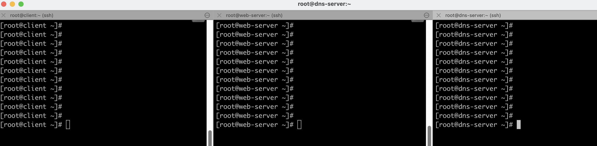
部署dns-server
安装bind套件
yum install bind bind-utils -y
解释
bind-utils：bind客户端程序集，例如dig, host, nslookup等；
bind：提供的dns server程序、以及几个常用的测试程序；
bind-libs：被bind和bind-utils包中的程序共同用到的库文件；
1.关闭防火墙
[root@dns-server ~]# systemctl stop firewalld
[root@dns-server ~]#
[root@dns-server ~]# iptables -F
[root@dns-server ~]#
[root@dns-server ~]# getenforce
Disabled
2.配置yum源，用于安装bind软件。
[root@dns-server ~]# ls /etc/yum.repos.d/
3.安装bind
[root@dns-server ~]# yum install bind -y
4.查看软件
[root@dns-server ~]# rpm -qi bind
5.查看dns配置文件
[root@dns-server ~]# rpm -ql bind
# 日志轮转文件
/etc/logrotate.d/named
# 配置文件目录
/etc/named
# 主配置文件
/etc/named.conf
# zone文件,定义域
/etc/named.rfc1912.zones
# 服务管理脚本
/usr/lib/systemd/system/named.service
# 二进制程序文件
/usr/sbin/named
# 检测配置文件
/usr/sbin/named-checkconf
# 检测域文件
/usr/sbin/named-checkzone
# 根域服务器
/var/named/named.ca
# 正向解析区域文件模板
/var/named/named.localhost
# 反向解析区域文件模板
/var/named/named.loopback
# dns服务器下载文件的默认路径
/var/named/slaves
# 进程pid
/var/rum/named
部署正向解析
1.备份原有文件
[root@dns-server ~]# cp /etc/named.conf /etc/named.conf.bak
[root@dns-server ~]#
[root@dns-server ~]#
[root@dns-server ~]# cp /etc/named.rfc1912.zones /etc/named.rfc1912.zones.bak
2.修改主配置文件
# 定义监听端口、监听方式、允许查询来源
options {
// 定义监听方式 any代表全网监听
// 监听的地址和端口，localhost表示监听在本机所有地址上；
listen-on port 53 { 127.0.0.1;any; };
listen-on-v6 port 53 { ::1; };
// 区域数据库文件存放的目录
directory "/var/named";
// dns解析过内容的缓存文件
dump-file "/var/named/data/cache_dump.db";
// 静态解析文件（几乎不用）
statistics-file "/var/named/data/named_stats.txt";
// 内存的统计信息
memstatistics-file "/var/named/data/named_mem_stats.txt";
recursing-file "/var/named/data/named.recursing";
secroots-file "/var/named/data/named.secroots";
// 允许谁向本台DNS发起查询请求（localhost|ip|any）；
allow-query { localhost;any; };
..
...
...
省略
// 控制日志输出级别，路径
logging {
channel default_debug {
file "data/named.run";
severity dynamic;
};
};
// 区域设置，这是根域。
zone "." IN {
type hint;
file "named.ca";
};
59 include "/etc/named.rfc1912.zones"; // 这里include表示，载入一个子配置文件
60 include "/etc/named.root.key";
配置文件解析
主配置文件组成部分：：
options {} ：全局选项（监听端口、数据文件存储位置、缓存位置、权限等）
logging {} ：服务日志选项
zone . {} ：自定义区域配置
include ：包含其他的文件
主配置文件注意事项
语法非常严格；
文件权限属主 root ，属组 named ，文件权限 640；
[root@dns-server ~]# ll /etc/named.conf
-rw-r----- 1 root named 1812 Feb 19 17:10 /etc/named.conf
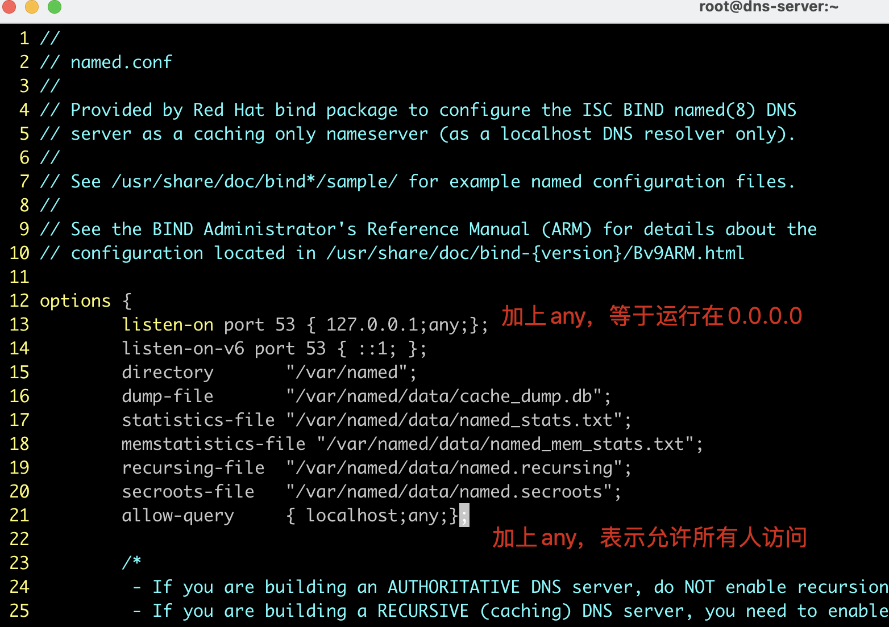
named.rfc1912.zones主配置文件解析
zone "ZONE_NAME" IN {
type {master|slave|hint|forward};
file "ZONE_NAME.zone";
};
zone "ZONE_NAME“：定义解析库名字，通常和解析库文件前缀对应起来。
type：
master指的是主dns解析
slave指的是从dns解析
hint指的是根域名解析（根提示域）
forward指的是转发，转发不使用file
file ：定义区域解析库文件名字（位置默认在/var/named下面）,file的前缀通常和zone的名字通常对应起来，然后加一个.zone的后缀。
继续看配置流程
3.修改子配置文件，自定义区域配置文件
配置解析
zone "example.com" IN {
type master|slave;
#自定义区域类型
file /path/to/zonefile;
#绝对路径和相对路径
allow-update {ip|none};
#允许哪个ip可以使用nsupdate动态更新 区域文件
};
添加如下配置，注意格式，这里就是添加你的域名了。 一定不要落下分号
[root@dns-server ~]# tail -5 /etc/named.rfc1912.zones
zone "yuchaoit.cn" IN {
type master;
file "yuchaoit.cn.zone";
allow-update { none; };
};
4.创建zone区域文件 yuchaoit.cn.zone，先去复制一个模板，区域文件放在了/var/named
[root@dns-server ~]# cp -p /var/named/named.localhost /var/named/yuchaoit.cn.zone
5.修改区域文件
让这个域名和你要的IP地址对应起来，以及添加一个三级域名www.yuchaoit.cn。
[root@dns-server ~]# cat /var/named/yuchaoit.cn.zone
$TTL 1D
@ IN SOA @ rname.invalid. (
0 ; serial
1D ; refresh
1H ; retry
1W ; expire
3H ) ; minimum
NS @
A 192.168.0.105
AAAA ::1
www A 192.168.0.105
6.修改完了后，务必修改zone文件的权限
[root@dns-server ~]# chmod 640 yuchaoit.cn.zone
[root@dns-server ~]# ll /var/named/
total 20
drwxrwx--- 2 named named 6 Nov 25 00:38 data
drwxrwx--- 2 named named 6 Nov 25 00:38 dynamic
-rw-r----- 1 root named 2253 Apr 5 2018 named.ca
-rw-r----- 1 root named 152 Dec 15 2009 named.empty
-rw-r----- 1 root named 152 Jun 21 2007 named.localhost
-rw-r----- 1 root named 168 Dec 15 2009 named.loopback
drwxrwx--- 2 named named 6 Nov 25 00:38 slaves
-rw-r----- 1 root named 173 Feb 19 17:58 yuchaoit.cn.zone
7.检查配置文件语法，不要有任何错误
[root@dns-server ~]# named-checkconf /etc/named.conf
[root@dns-server ~]# named-checkconf /etc/named.rfc1912.zones
[root@dns-server ~]#
8.启动named域名解析服务，注意名字是这个。
[root@dns-server ~]# netstat -tnlp|grep named
[root@dns-server ~]#
[root@dns-server ~]# systemctl start named
[root@dns-server ~]# netstat -tnlp|grep named
tcp 0 0 10.96.0.177:53 0.0.0.0:* LISTEN 8051/named
tcp 0 0 192.168.0.104:53 0.0.0.0:* LISTEN 8051/named
tcp 0 0 127.0.0.1:53 0.0.0.0:* LISTEN 8051/named
tcp 0 0 127.0.0.1:953 0.0.0.0:* LISTEN 8051/named
tcp6 0 0 ::1:53 :::* LISTEN 8051/named
tcp6 0 0 ::1:953 :::* LISTEN 8051/named
[root@dns-server ~]#
关于zone文件语法解析
time to live（TTL），ttl值主要是控制域名指向的ip地址在dns服务器上的缓存时间
@ 指的就是yuchaoit.cn
$TTL 1D //定义一个TTL默认值为1天,下面数据直接引用此值.
@ [TTL] IN SOA 主DNS服务器FQDN 管理员邮箱 (
0 ; 序列号
1D ; 更新间隔
1H ; 更新失败后重试间隔
1W ; 过期时长
3H ) ; 否定记录保存时长
资源类型：A（IPv4）, AAAA（IPv6）：定义FQDN的IP
NS ： 定义DNS服务器的FQDN
SOA : 起始授权（每个zone首先要定义此值）
MX： 定义邮件记录，有优先级概念（0-99），值越小优先级越高。
CNAME: 定义别名
PTR： 反向记录
客户端设置DNS地址（重要）
1.客户端配置我们自己部署的dns服务器地址，写入配置文件，这个192.168.0.104是超哥部署的dns服务器IP。
[root@web-server ~]# cat /etc/resolv.conf
# Generated by NetworkManager
nameserver 192.168.0.104
2.检查解析关系
[root@web-server ~]# nslookup www.yuchaoit.cn
Server: 192.168.0.104
Address: 192.168.0.104#53
Name: www.yuchaoit.cn
Address: 192.168.0.105
3.修改dns服务器地址试试，看看解析关系
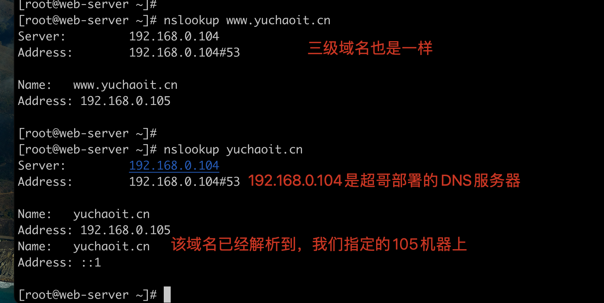
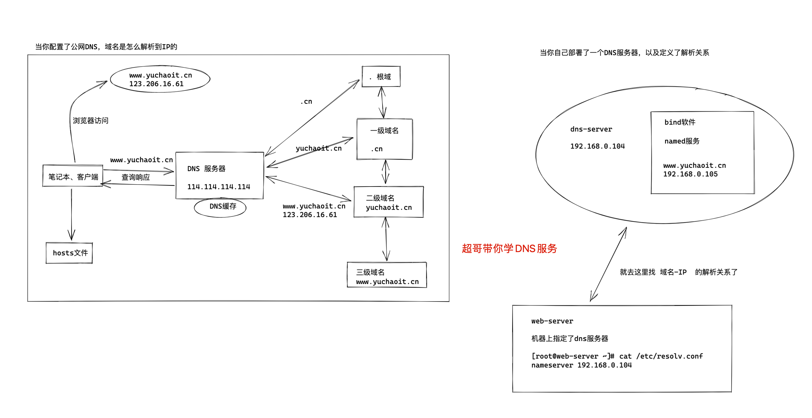
试试改掉dns服务器，改为公网的114.114.114.114
[root@web-server ~]# cat /etc/resolv.conf
# Generated by NetworkManager
#nameserver 192.168.0.104
nameserver 114.114.114.114
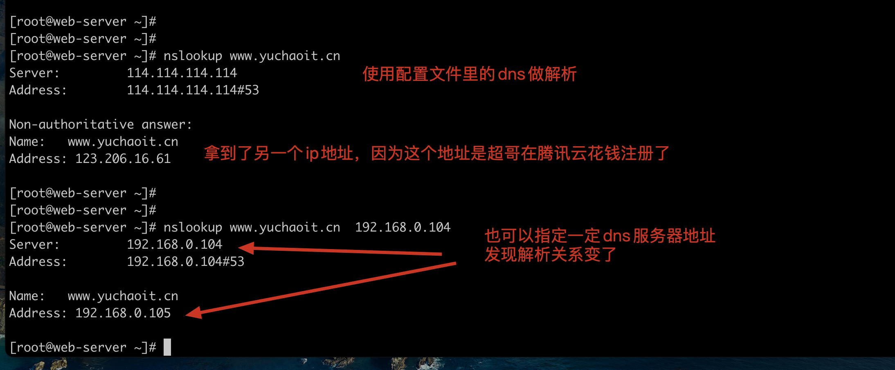